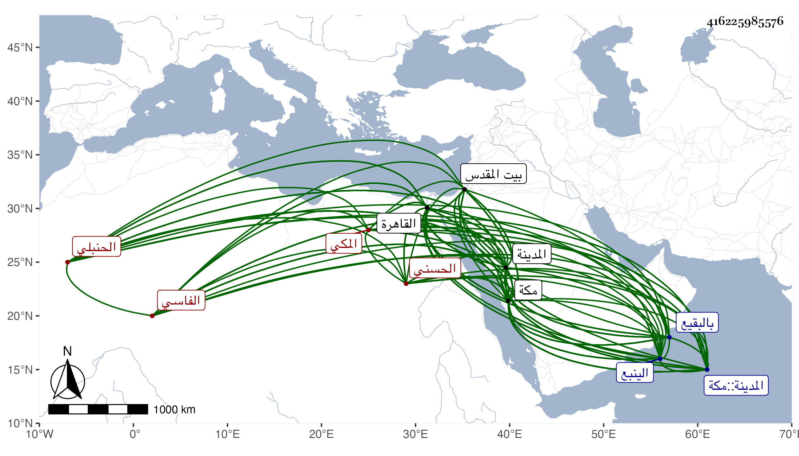

0902Sakhawi.DawLamic.ITO20230111-ara1.EIS1600.416225985576
Biography ID: 416225985576
723
عبد القادر بن عبد اللطيف الأصغر بن أبي الفتح محمد بن أحمد بن أبي عبد الله محمد بن محمد بن عبد الرحمن محيي الدين أبو صالح بن السراج الحسني الفاسي الأصل المكي الحنبلي الآتي أبوه وولده وأمه أم ولد لأبيه حبشية قاضي الحرمين الحنبلي . ولد في مغرب ليلة الثلاثاء سادس عشر رمضان سنة اثنتين وأربعين وثمانمائة بمكة ومات أبوه وهو ابن إحدى عشرة سنة ولم يخلف له شيئا بحيث لم يجدوا شيئا للحج به في تلك السنة ، ونشأ بها فحفظ القرآن وصلى به التراويح وجانبا من المحرر لابن عبد الهادي بل ذكر أنه حفظ الشاطبية والكافية لابن الحاجب ومختصره الأصلي والتلخيص وسمع على أبي الفتح المراغي صحيح البخاري وغيره وعلى الشهاب الزفتاوي المسلسل وجزء أبي الجهم بفوت في آخره وجزء أيوب وغيرها وعلى التقي بن فهد ختم مسند عبد وأجاز له في سنة ثلاث وأربعين فما بعدها خلق منهم أبوه وزينب ابنة اليافعي وشيخنا ومستمليه الزين رضوان والزين الزركشي وابن الفرات وسارة ابنة ابن جماعة والمحب محمد بن يحيى الحنبلي والعلاء بن بردس والشهاب بن ناظر الصاحبة وأبو جعفر بن العجمي والمحب المطري والبدر بن العليف والعيني وابن الديري والسيد صفي الدين وأخوه عفيف الدين وأبو المعالي محمد بن علي الصالحي وابن أبي التائب ، واشتغل بالقراءات والفقه والاصلين والعربية والمعاني والبيان وغيرها فتلا لأبي عمرو ونافع وابن كثير على الشمس محمد بن شرف الدين الششتري المدني وجمعا للسبعة على المقرىء عمر الحموي النجار نزيل مكة وأخذ في الفقه عن العز الكناني بالقاهرة والعلاء المرداوي واشتدت ملازمته له حتى قرأ عليه غير تصنيف والتقي الجراعي في مجاورتهما بمكة سنة خمس وسبعين والعربية عن الشمني وجماعة والاصول عن الأمين الاقصرائي والتقي الحصني وغيرهما وأصول الدين عن العلاء الحصني قرأ عليه في شرح العقائد للتفتازاني وغيره ولازم مظفرا الشيرازي في فنون من العقليات وأذن له الاقصرائي والتقي الحصني وغيرهما وأول ما دخل القاهرة صحبة الحاج في أوائل سنة ثمان وخمسين فولي بها إمامة مقام الحنبلي بالمسجد الحرام عوضا عن والده وباشرها في يوم السبت خامس جمادى الأولى منها ثم دخلها أيضا في سنة اثنتين وستين وأقام بها إلى أن ولي قضاء الحنابلة بمكة في منتصف شوال من التي تليها بعناية الأمين الاقصرائي ودخل مكة صحبة أمير الحج المصري وهو لابس الخلعة في صبيحة يوم الخميس تاسع عشري ذي القعدة منها وقرىء توقيعه ثم أضيف إليه في سنة خمس وستين قضاء المدينة النبوية ومشى حاله بعد مصاهرة البرهاني بن ظهيرة وتزوجه بأخته بحيث قيل من أبيات :
| ولا تخش القلى منهم بوجه | فقد وافتك سيدة الجميع |
ودرس بالبنجالية وغيرها كتدريس خيربك ، وأخذ عنه الفضلاء في الفقه والعربية والمعاني والبيان لمزيد ذكائه وتودده وحسن عشرته وفتوته وتواضعه وجودة خطه وتوسط نظمه ونثره الذي منه في إجازة : راش الله جناحه وأطاش بالمحو حباحه ومن نظمه ما سيأتي في الجمالي أبي السعود ، وكثر استرواحه في الاقراء والتواضع بحيث لم يحمده كثيرون فيه وربما استشعر ذلك فبالغ عنه الغرباء في الاعتذار وامتنع من عمل الخلع متمسكا بأنه غالبا حيلة وهي لا تجوز ولم يحمد فضلاء مذهبه منه ذلك ، وأقبل بأخرة على الاشتغال بالذكر والاوراد والتلاوة الجيدة بصوته الشجي المنعش حتى ارتقى إلى غاية شريفة في الخير سيما وهو يتوجه في كل سنة إلى المدينة النبوية ويقيم غالبا بها نصف سنة وربما أقام بها سنة كاملة بل جمع بين المساجد الثلاثة في عام واحد فإنه توجه في سنة ست وثمانين من مكة إلى المدينة ثم منها إلى الينبع ثم في البر إلى القاهرة فأقام بها يومين أو ثلاثة مختفيا ثم توجه إلى بيت المقدس فزار ثم رجع إلى بلده ، وكثر اختصاص أولى الأصوات اللينة ونحوهم وهو يزيد في الاحسان إليهم مع حسن توجه في التلاوة والانشاد وجلد على السهر في الاذكار والاوراد وخشوع عند الزيارة وخضوع في العبارة وميل إلى الوفائية ونحوهم وإلى التنزة والبروز إلى الفضاء والحدائق بالحرمين سيما مسجد قباء ومشهد حمزة وإذا خرج يذهب معه بما يناسب الوقت من المآكل والطرف ونحوها ولذا غيره كثرت ديونه بحيث أخبرني انها تقارب ثلاثة آلاف دينار وأنشأ بكل من الحرمين بيتا وأسند الخواجا حسين بن قاوان إليه وصيته في آخرين ولم يسلم في كل من منتقد خصوصا وهو يتعالى غالبا عن الاجتماع مع جل رفاقه القضاة حتى لا يجلس في محل لا يرضاه وقد رافقته في التوجه من مكة إلى المدينة في سنة سبع وثمانين فحمدت مرافقته وافضاله وكثر اجتماعنا في الموضعين وزرنا جميعا كثيرا من مشاهد المدينة كقبا والسيد حمزة والعوالي وسمع مني بل كتبت عنه من نظمه وعنده من تصانيفي عدة وكتبه ترد علي بالثناء البالغ والوصف بشيخ الاسلام بل قال بحضرتي في مجاورتي الرابعة للقاضي الشافعي لم يخلف شيخنا الأمين الاقصرائي في طريقته مع أهل الحرمين وكذا وكذا إلا فلان ومرة هو غيث بكل زمان حل به نفع أهله إلى غيرها ثم تزايد من الافضال والثناء حتى بأمير الحرمين في التماس اقتفائي في الزيارة حين توجهي في قافلته سنة وفاته إلى أن مات وذلك في ضحى يوم الخميس رابع عشر شعبان سنة ثمان وتسعين بعد تعلل نحو نصف شهر شهيدا بالاسهال وصلى عليه بعد عصره بالروضة ، ودفن بالبقيع بعد العصر من ليلة الجمعة الموافقة ليلة نصف شعبان عند قبر أمه وأخيه وتأسفنا على فقده عوضه الله الجنة ورحمه . ومما كتبه إلى :
| سلام عليكم من مشوق متيم | يود لقاكم كل حين بمكة |
| ويسأل رب العرش في كل لحظة | قريب اجتماع عند بيت وكعبة |
| ولطفا بنا فيما قضاه الهنا | ويكشف عنا كل سوء وكربة |
| ويجعلنا من أهل صدق وداده | ويحجبنا عن كل ضيق وفتنة |
| وبعد فشوقي زائد وتعطشي | إلى خير أصحاب وأكرم جيرة |
ومنها :
| فحياهم المولى وقرب وصلهم | وأتحفهم بالروح في كل لحظة |
| وأما دعائي فهو والله وافر | مزيد باخلاص وصدق وهمة |
| ولم أنسكم بالذكر في كل موقف | وقفت به بل في ركوعي وسجدتي |
| وعند وقوفي بالصخار معرفا | وبين يدي قبر الرسول بحجرة |
| فيا ربنا ... فاقبل دعانا وعافنا | وخذ بنواصينا وأصلح وثبت |
ومنها :
| ولما أتتني من لديكم رسالة | فهاج بها شوقي وحرك لوعتي |
| وذكرني عهدا وما كنت ناسيا | ومن ذا الذي يسلي فراق الأحبة |
| وعند مروري للسطور تناثرت | على صحن خدي من دموعي عبرتي |
| وأثبتها عندي وصرت مشاهدا | لذاتكم حتى كأني بخلوتي |
| وقلت الهي بالنبي وآله | أنلنا منانا يا إله البرية |
| فيا سادتي بالله لا تهملونني | ولا تتركوني غارقا في بليتي |
ومنها :
| وأسألكم أن تذكروني بدعوة | لعل بها أن يقضي الله حاجتي |
| خذوا بيدي يا إخوة الصدق واسعفوا | فكم من هموم قد علتني بقتلتي |
| وهموا بعزم في التوجه لي عسى | يخفف ما بي أو تفرج كربتي |
| فلا أوحش الرحمن منكم وخصكم | بعافية يا سادتي وبصحة |
ومنها :
| وصلى اله العرش ربى دائما | على المصطفى المختار خير الخليقة |
| وأصحابه والتابعين وحزبهم | وأشياعه مع آله ثم عترة |
